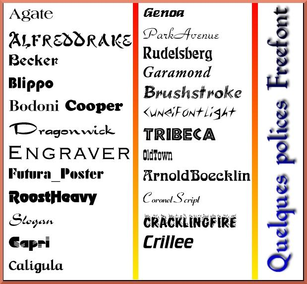
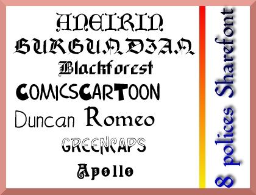
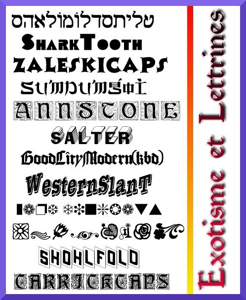
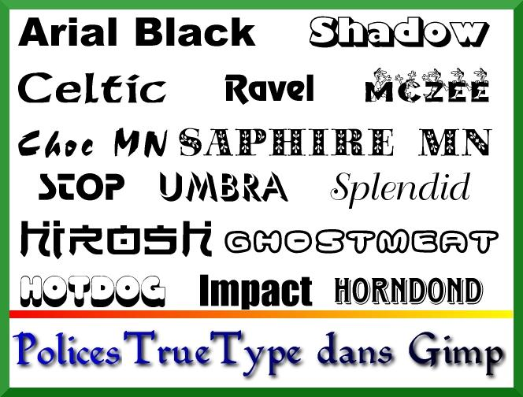
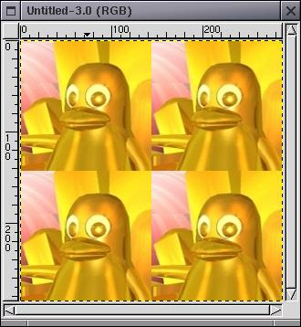
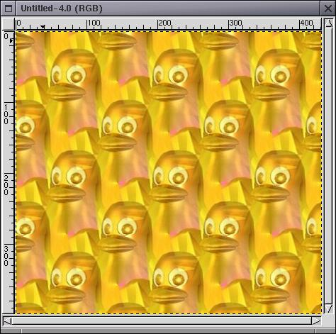
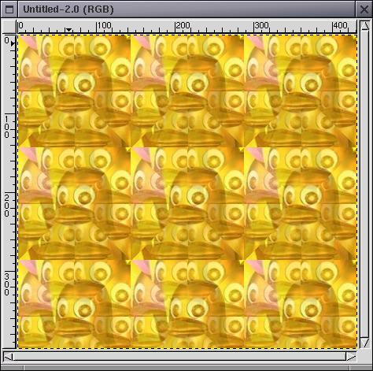

![[LinuxFocus-icon]](gimptip.files/logolftop.gif) |
| Домой | Карта | Индекс | Поиск |
| | |
| Новости |
| |
Архивы |
| |
Ссылки |
| |
Про LF
| |
| Эта заметка доступна
на: English
Castellano
Deutsch
Francais
Nederlands
Portugues
Russian
Turkce
Arabic
|
автор André Pascual
<apascual(at)club-internet.fr>
Об
авторе:
В прошлом чертежник, а в настоящее время -- преподаватель технологии, в
частности CAD.
Дизайн, в особенности 3D -- его страсть.
Перевод на
Русский:
Eugene S. Saenko <caspar(at)pisem.net>
Содержание:
- Вступление
- Установка
Freefont и Sharefont
- Результаты
- Использование
True Type
- Создание
шаблонов
- Предварительное
заключение
- Страница
отзывов
|
Freefont, TrueType и шаблоны в Gimp
![[Illustration]](gimptip.files/illustration99.gif)
Резюме:
Статьи "Pseudo
3D" ("Псевдо 3D") и "Effects
of fire" ("Эффект огня") привели к тому, что я начал получать множество
emails, по большей части связанных со сложностью предложенных упражнений.
Фактически, они сложны только для новичков. Опытный пользователь Linux не
остановится из-за отсутствия шрифта или шаблона: он легко установит шрифты и
найдет подходящий путь для записи, но это не так в случае с моими
корреспондентами. Все они были новичками, но кто не может оказаться новичком в
какой-либо из областей Linux'а? Итак, эта статья предназначена для новичков, но
описанные методы не покоробят и пуристов.
Вступление
При подготовке этой статьи использовались Mandrake 8.0 и Gimp 1.2.1. При
использовании других версий структура каталогов, индексы и меню могут отличаться
от описанных в тексте. В таком случае может потребоваться адаптация к конкретной
конфигурации.
При обсуждении печати символов я буду использовать термины
шрифты (fonts) и стили (styles) абсолютно равноправно. Полные стили будут
называться шаблонами (patterns) или стилями (motifs). Вместо употребления
официального наименования XFree86 я буду говорить просто X.
Подобным же
образом, говоря о Midnight Commander, который позволяет оперировать файлами не
обладая глубокими знаниями о базовых функциях Linux и их обильных опциях, я буду
называть его MC. Пользователи Norton Commander и Xtree Gold под DOS или
WinCommander под Windows почувствуют себя на знакомой территории. Вплоть до
функциональных клавиш, которые имеют одинаковое назначение в MC и в
WinCommander! Будем же прагматиками. Несомненно, лучше делать что-то
функциональное, но неуклюжее, чем что-то изысканное, но не
функциональное.
Установка Freefont и Sharefont
По умолчанию script-fu's используют шрифты, которые в различных дистрибутивах
могут не устанавливаться по умолчанию. Эти шрифты поставляются в составе двух
пакетов: Freefont и Sharefont. Первый из них бесплатный, а второй
распространяется по shareware лицензии, но оба очень интересны. Несомненно они
привносят большое разнообразие в презентационные возможности X.

Figure 1.
Оба эти пакета доступны в .tgz архивах благодаря Кристофу Ламетеру (Christoph Lameter) по
адресу в интернете (например,http://ibiblio.org/pub/Linux/X11/fonts/,
ibiblio был раньше известен как metalab или sunsite) а, также, иногда, на CD на
обложках журналов. На CD, прилагаемом к Linux Magazine France No 9 они
расположены в каталоге /Gimp/fonts.
В этом случае шрифты можно установить
так:
- 1.1 смонтируйте CD
- 1.2 запустите MC
- 1.3 в правом окне выберите каталог /Gimp/fonts на CD или тот каталог, в
который Вы загрузили файлы
- 1.4 В левом окне (или наоборот) выберите каталог /usr/X11R6/lib/X11/fonts
на жестком диске
- 1.5 Скопируйте (F5) архивы freefont.tgz и sharefont.tgz в выбранный
каталог жесткого диска
- 1.6 Распакуйте архивы (F2 открывает меню, в котором надо выбрать
распаковку архива в каталог)
Если такой опции нет в меню, выйдите из MC (F10), причем, курсор при выходе
должен оставаться в окне, в котором отображаются скопированные Вами файлы. Если
Вам не сложно, добавьте к .bashrc следующую строку:
mc ()
MC=`/usr/bin/mc -P "$@"`; [ -n "$MC" ] && cd "$MC"; unset MC
;
Вы окажетесь в выбранном каталоге. Если нет, перейдите
туда:
cd /usr/X11R6/lib/X11/fonts
и выполните распаковку
вручную:
tar xvfz *.tgz
Вы получите два новых каталога: freefont и sharefont. Архивы .tgz теперь
можно удалить.
Freefont содержит 79 шрифтов, почти все полезные, а Sharefont
-- 22.

Figure 2.
В каждом из каталогов, также, содержится специальный файл fonts.dir, в
котором содержатся характеристики каждого из шрифтов для X. Это значит, что для
создания этого файла Вам не придется запускать mkfontdir.
X загрузит эти
шрифты при следующем запуске, но только при условии, что Вы сообщите ему, что он
должен их использовать. В более ранних дистрибутивах Вы должны были добавить в
файл /etc/X11/XF86Config в секцию "Files" следующие строки:
FontPath
"/usr/X11R6/lib/X11/fonts/freefont"
FontPath
"/usr/X11R6/lib/X11/fonts/sharefont"
Но в Mandrake 8.0 используется
фонт-сервер. Для добавления шрифтов к фонт-серверу используют утилиту
chkfontpath:
chkfontpath --add
/usr/X11R6/lib/X11/fonts/freefont/
chkfontpath --add
/usr/X11R6/lib/X11/fonts/sharefont/
Перезапустим
фонт-сервер:
/etc/rc.d/init.d/xfs restart
Если Вы работаете в графическом, а не в консольном режиме, эти инструкции
можно ввести в терминале (rxvt, kvt, wmterm...). Тем не менее шрифты не станут
доступными немедленно: они будут загружены после перезапуска X или после ввода
во все еще открытом терминале команд:
xset fp+
/usr/X11R6/lib/X11/fonts/freefont
xset fp rehash
xset fp+
/usr/X11R6/lib/X11/fonts/sharefont
Xset fp rehash
Результаты
Чтобы проверить, что шрифты действительно загружены, запустим
xlsfonts
| egrep 'sharefont|freefont'
или запустим xfontsel, или просто фонт-менеджер
KDE.
Шрифты теперь доступны во всех (согласен, не совсем) приложениях
X.
Шрифты можно собрать в таблицу, как в этой статье с помощью следующих
команд Gimp:
xtns> Script-Fu> Utils> Font
Map.
Важно: это беспощадный инструмент. Одна ошибка при вводе имени
шрифта, и Вы отброшены к самому началу. Лучший способ обойти это -- работать с
Gimp при запущенном фонт-менеджере KDE. В этом случае Вы можете видеть имя
шрифта в менеджере и в то же время видеть его в поле образца. На Figure 3
показаны некоторые шрифты, Которые могут использоваться для создания причудливых
заголовков или логотипов.

Figure 3.
Использование True Type
Эти вновь установленные шрифты, конечно, интересны, но у Вас, возможно,
имеется на жестком диске раздел Windows с легионами прекрасных шрифтов True
Type? Если у Вас нет Windows, Вы можете загрузить шрифты True Type с различных
сайтов, например, http://hugemcgriffin.com/fonts/a/,
http://www.fontguy.com/, http://www.freepcfonts.com/index.html,
... Их можно использовать.
Последние дистрибутивы Linux и те, которые только
ожидаются, естественно, предусматривают их использование. Но это не так в старых
дистрибутивах, таких, как Mandrake 5.3
Существует решение этой проблемы. Это
решение -- сервер Xfstt (исполняемый файл около 130 Kb после компиляции) можно
найти по адресу (среди прочих): ftp://sunsite.unc.edu/pub/Linux/X11/fonts/.
Архив, который Вам нужен, называется Xfstt-0.9.10.tgz (или более поздняя
версия), имеет размер около 80Kb. Номер версии показывает, что программа все еще
развивается, но не имеет серьезных проблем функциональности.
Перед
компиляцией необходимо сделать некоторые приготовления, а именно, создать
каталог для записи шрифтов True Type, например, /usr/share/fonts/truetype/
(mkdir /usr/share/fonts/truetype/ или F7 в MC). Затем скопируйте необходимые
шрифты в этот каталог, или создайте символическую ссылку (в MC F9, затем File,
затем Symlink), указывающую на каталог шрифтов Windows. У меня
/usr/share/fonts/truetype/ -- это ссылка на /mnt/Win98/windows/fonts, где
/mnt/Win98 -- точка монтирования моего раздела Windows.
Теперь можно начинать
компиляцию; для этого перейдите в каталог, полученный при разворачивании архива
(/tmp/xfstt0910) и выполните команду:
make xfstt && make
install
После конца компиляции исполняемый двоичный файл
xfstt записывается в /usr/X11R6/bin. Теперь остается сообщить
серверу xfstt, какие шрифты он должен использовать. Выполните
команду:
xfstt --sync --dir /usr/share/fonts/truetype
В
результате в /usr/share/fonts/truetype будут созданы два файла
описаний ttinfo.dir и ttname.dir.
Сервер
запускается командой: xfstt --dir /usr/share/fonts/truetype
&.
Тем не менее, после выполнения команды, кажется, что ничего не
случилось: эти шрифты доступны только в X, а не в текстовом режиме, и, если Вы в
X, то необходимо дать X команду загрузить их. Это можно сделать следующей
командой:
xset +fp unix/:7100
После этого проверьте с помощью
"xlsfonts | grep ttf-", или xfontsel или с помощью фонт-сервера KDE, что шрифты
TrueType теперь доступны; они должны быть доступны всем (ну почти) приложениям,
выполняемым под X. StarOffice5 позволяет использовать их в StarDraw,
StarImpress, StarCalc, но, как ни странно, не в StarWriter. Возможно есть
настройка, позволяющая активизировать их, но, если это так, мне не удалось ее
найти. В любом случае, они доступны в Gimp, в чем можно убедиться на figure 4.
Для Gimp имеется, также плагин freefont. Если он у Вас установлен, у Вас имеется
еще одна возможность использовать в Gimp шрифты TrueType. В отличие от сервера
xfstt, плагин freefont, конечно не делает шрифты доступными для всех
приложений.

Figure 4. В документации утверждается, что можно
добавить в XF86Config в раздел Files строку: FontPath "unix/:7100"; но у меня
это ни разу не сработало; там, также, говорится о необходимости запускать xfstt
перед запуском X, а остальные команды выполнять в терминале, при этом они не
запоминаются. Проще всего автоматизировать этот процесс, написав два небольших
скрипта один для запуска сервера, а другой -- для его закрытия. Не забудьте
сделать скрипты исполняемыми (в MC F9, File, Chmod), а, затем, записать их,
например, в /usr/local/bin. Скрипт активации можно назвать, например, ttf, а
скрипт деактивации -- dttf. В первом должны быть такие строки:
#!/bin/sh
xfstt --sync --dir /usr/share/fonts/truetype
xfstt &
xfstt +fp unix/:7100
А во втором:
#!/bin/sh
xset -fp unix/:7100
Это решение, которым пользуюсь я: и оно работает.
Создание шаблонов
Шаблоны (изображения) -- ничто иное, чем файлы битовых карт изображений в
формате .pat, специально предназначенном (но не защищенном авторским правом) для
Gimp, которые используются наподобие инструмента "заливки". Они хранятся в
каталоге /usr/share/gimp/1.2/patterns/. Вновь создаваемые шаблоны можно
записывать в этот каталог, что даст доступ к ним другим пользователям, или в Ваш
домашний каталог в ~/.gimp/patterns, в этом случае этими шрифтами сможете
пользоваться только Вы.
Предположим, мы хотим использовать изображение figure 5 в качестве "бумажной"
подложки изображения.
Figure 5.
Мы можем сделать это вручную, путем копирования и вставки, но это долго и не
очень точно: шаблоны надо уложить пиксел к пикселу! Лучше доверить это Gimp'у; и
он справится с этим, если укладываемые изображения хранятся в подходящем
формате, то-есть в .pat файле.
Если это не так, Вы можете поступить
так:
- Загрузите кандидата на шаблон в Gimp
- Запишите его в один из указанных выше каталогов, обязательно в формате
.pat так:
щелчок правой кнопкой на изображении> Save as> By
extension> Pat > ~/.gimp/patterns/Tux1.pat> ok
- Перед записью Gimp запросит имя шаблона, это не имя файла, а
идентификатор; по умолчанию шаблон называется GIMP Pattern. Назовем его Tuxdor
("золотой Tux").
Выйдем из Gimp, поскольку новый шаблон станет доступным только после
перезапуска, и перезапустим его.
В панели инструментов выберем
File>Dialogs>Patterns. Появляется окно выбора шаблонов, в котором показаны
все доступные шаблоны; если щелкнуть по образцу, он временно увеличится. Текущий
шаблон выбирается щелчком по его образцу.
Найдем шаблон Tuxdor где-то ближе к
концу списка, поскольку шаблоны располагаются по алфавиту, и выберем его для
использования.
Создадим новую рабочую область File>New>Width 288 Height
286 (место для 4 шаблонов)
сделаем двойной щелчок на Fill with a colour or
pattern (заливка цветом или шаблоном) и выберем Pattern Fill (заполнение
шаблоном).
Щелкнем на пустом месте рабочей области и она заполнится "золотым
Tux'ом":

Figure 6.
Тем не менее заполнение не вполне эстетически совершенно: "швы" между
шаблонами видны. Это зависит от самого шаблона, который создавался без учета
необходимости "сшивания" границ. Давайте исправим это. Вновь откроем оригинал
figure 5. Щелкнем правой кнопкой мышки на изображении, а
затем
>Filters> Map> Make Seamless (сделаем бесшовным), мы получим
новое изображение.
Figure 7.
Сохраним его в том же месте под именем Tux2.pat, с идентификатором TuxTile.
Выйдем из Gimp, перезапустим его и создадим новое изображение 432x392 пиксела.
Заполним это новое изображение шаблоном TuxTile. Теперь у нас новое изображение
без швов, но имеющее несколько "милитаристический" вид (конечно не это было
целью). Тем не менее качество изображения гораздо лучше, чем в предыдущем
случае.

Figure 8.
Но все же хотелось бы иметь более мягкое изображение, более размытое. Чтобы
получить соответствующий шаблон:
- Вновь откроем оригинал figure 5
- Щелкнем правой кнопкой мышки на изображении> Filters > Map>
Illusion> 8> OK
- мы получили новое изображение
Figure 9.
- Снова запишем его в том же месте под именем Tux3.pat, с идентификатором
TuxIllus
- Выйдем из Gimp, перезапустим его и вновь создадим новое изображение
432x392
- Заполним новое изображение шаблоном TuxIllus
- Теперь у нас колония Tux'ов. Привлекательна ли она? Ну это дело вкуса!

Figure 10.
Предварительное заключение
Последнее
изображение показывает, что можно сделать с этими шрифтами и шаблонами,
отличными от тех, которые поставляются с Gimp. Текст создан с использованием
Script-Fu logo; конечно, пришлось потрудиться, чтобы он так выглядел, но такого
результата может достигнуть любой. Достаточно исследовать многочисленные
возможности, предоставляемые программным обеспечением и получить от этого
удовольствие.
Страница отзывов
У каждой заметки есть страница отзывов. На этой
странице вы можете оставить свой комментарий или просмотреть комментарии других
читателей.
Webpages
maintained by the LinuxFocus Editor team
©
André Pascual, FDL
LinuxFocus.org
Click here to report a fault or send a comment to
LinuxFocus
|
Translation
information:
| fr --> -- : André Pascual <apascual(at)club-internet.fr> |
| fr --> en: Scott Rutherford (homepage) |
| en --> ru: Eugene S. Saenko
<caspar(at)pisem.net> | |
2001-11-14, generated by lfparser version 2.19